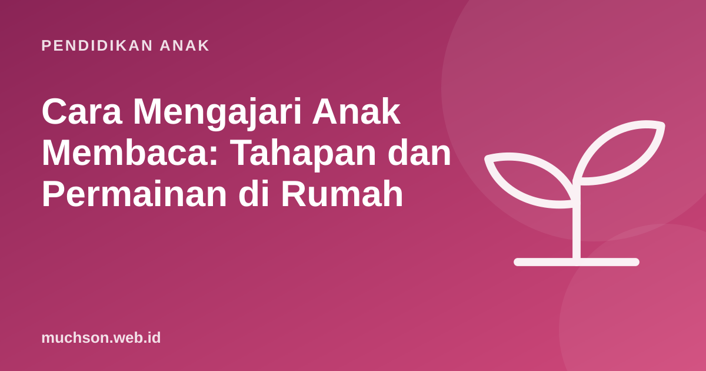

Beranda › Artikel › Pendidikan Anak
Pendidikan AnakCara Mengajari Anak Membaca: Tahapan dan Permainan di Rumah
Melihat anak membaca kata pertamanya adalah momen yang membahagiakan. Namun prosesnya sering membuat orang tua cemas: kapan harus mulai, metode apa yang benar, dan kenapa anak tetangga sudah lancar sementara anak saya belum? Artikel ini menjelaskan tahapan belajar membaca, permainan yang terbukti membantu, dan kapan perlu mencari bantuan.

Tidak perlu terburu-buru
Sejak tahun ajaran 2023/2024, Kemendikbudristek melalui kebijakan Transisi PAUD ke SD yang Menyenangkan meminta sekolah tidak lagi memakai tes calistung (membaca, menulis, berhitung) sebagai syarat masuk SD. Membaca diajarkan di SD, bukan menjadi syarat untuk masuk. Ini kabar baik: orang tua bisa fokus membangun fondasi yang menyenangkan, bukan mengejar target.
Usia anak mulai lancar membaca sangat bervariasi. Membandingkan dengan anak lain biasanya hanya menambah tekanan. Yang lebih penting adalah anak menyukai buku dan berkembang dari tahap ke tahap.
Tahapan belajar membaca
Bahasa Indonesia punya keuntungan besar: cara menulis dan membacanya sangat konsisten. Huruf "a" hampir selalu berbunyi /a/. Karena itu, banyak anak Indonesia bisa maju cukup cepat setelah memahami hubungan huruf dan bunyi, terutama lewat suku kata (ba-bi-bu-be-bo).
Kesadaran bunyi: tahap yang sering dilewatkan
Sebelum mengenal huruf, anak perlu bisa "mendengar" bagian-bagian kata. Panel ahli membaca di Amerika Serikat (National Reading Panel, 2000) menyimpulkan bahwa latihan kesadaran fonemik dan fonik yang sistematis membantu anak belajar membaca. Permainan berikut melatihnya tanpa buku sama sekali:
- Tepuk suku kata. "Ku-cing" dua tepukan, "ku-pu-ku-pu" empat tepukan.
- Tebak bunyi awal. "Benda apa di dapur yang bunyinya diawali /p/?" Piring, panci, pisau.
- Rima. "Topi, kopi, ... apa lagi yang berakhiran -opi?"
- Gabung bunyi. Anda mengucapkan "bu ... ku", anak menebak "buku".
- Pisah bunyi. Kebalikannya: "sapu" dipisah menjadi "sa ... pu".
Permainan membaca di rumah
| Permainan | Tahap | Cara |
|---|---|---|
| Berburu huruf | 3 | Cari huruf "m" di bungkus makanan, papan nama toko, dan kemasan |
| Kartu suku kata | 4 | Kartu "ba", "ju", "bu", "ku". Gabungkan menjadi kata sungguhan dan kata lucu |
| Label rumah | 4-5 | Tempel tulisan "pintu", "meja", "kursi" pada bendanya |
| Daftar belanja | 5 | Anak membacakan daftar belanja di pasar atau minimarket |
| Pesan rahasia | 5-6 | Selipkan pesan pendek di kotak bekal: "Ayo habiskan nasimu!" |
| Ceritakan ulang | 6 | Setelah membaca, anak menceritakan dengan kata-katanya sendiri |
Kesalahan yang sering terjadi
Membaca adalah memahami
Anak yang bisa mengucapkan kata-kata belum tentu memahami isinya. Setelah anak lancar, geser fokus ke pemahaman dengan pertanyaan sederhana: "Siapa tokohnya? Apa masalahnya? Menurutmu kenapa dia melakukan itu? Kalau kamu jadi dia, apa yang kamu lakukan?" Pertanyaan "kenapa" dan "bagaimana jika" melatih anak berpikir di balik teks.
Indonesia termasuk negara dengan skor membaca rendah pada asesmen internasional PISA. Kebiasaan membaca dan berdiskusi tentang bacaan di rumah adalah salah satu cara paling sederhana untuk membantu anak.
Kapan perlu mencari bantuan?
Konsultasikan dengan guru, dokter anak, atau psikolog jika anak usia SD kelas 2 ke atas masih sangat kesulitan menghubungkan huruf dengan bunyi meski sudah berlatih rutin, sering tertukar huruf secara terus-menerus disertai kesulitan lain, atau sangat menghindari kegiatan membaca. Pemeriksaan penglihatan dan pendengaran juga penting, karena masalah mata atau telinga bisa terlihat seperti kesulitan membaca.
Setelah anak lancar membaca kalimat pendek, dunia baru terbuka, termasuk coding dengan blok berteks. Membaca instruksi, memahami tujuan, lalu menyusun langkah adalah latihan literasi yang menyenangkan. Anak bisa mencobanya di pelajaran gratis PixelKode.
Tanya jawab
Usia berapa anak sebaiknya bisa membaca?
Apakah tes calistung masih jadi syarat masuk SD?
Metode apa yang paling efektif untuk mengajari membaca?
Anak saya sering tertukar b dan d. Apakah disleksia?
Sumber dan bacaan lanjut
- National Reading Panel (2000). Teaching Children to Read
- Kemendikbudristek: Merdeka Belajar Episode 24, Transisi PAUD ke SD yang Menyenangkan
- AAP (2014). Literacy Promotion: An Essential Component of Primary Care Pediatric Practice
- OECD: PISA 2022 Results, catatan negara Indonesia